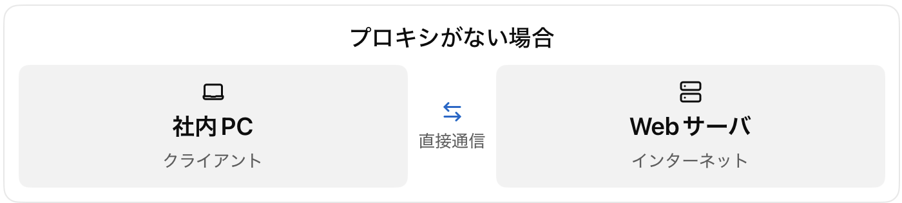
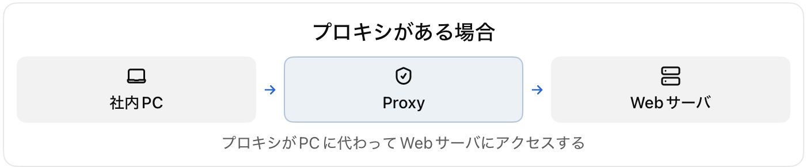
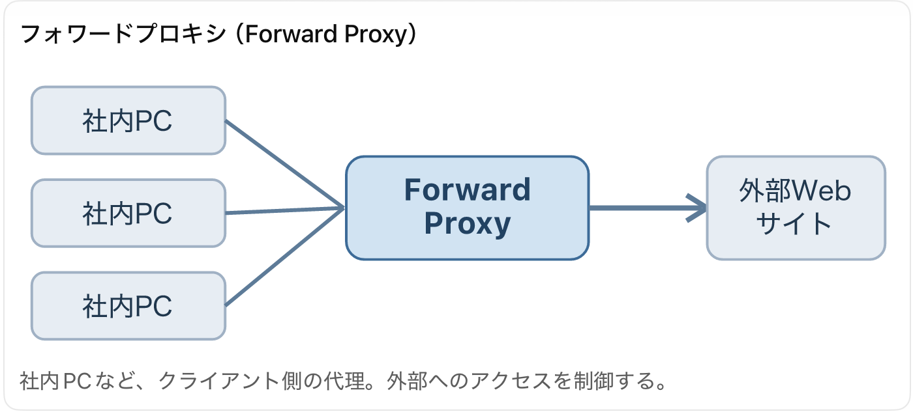
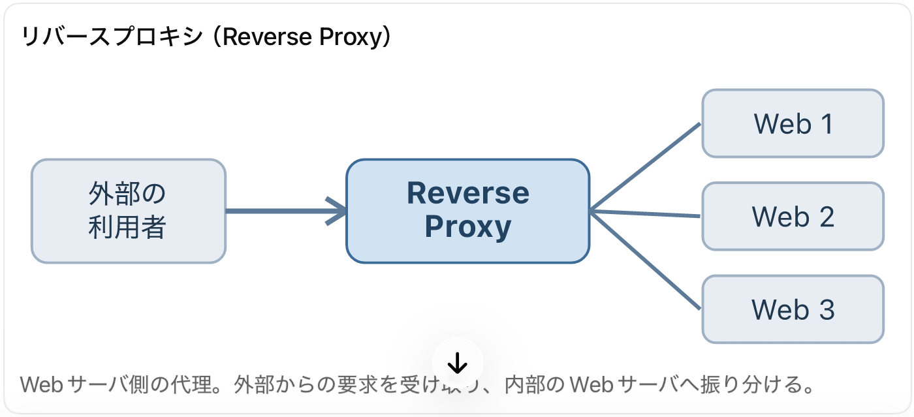
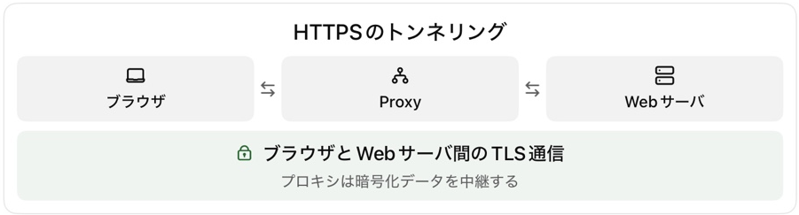
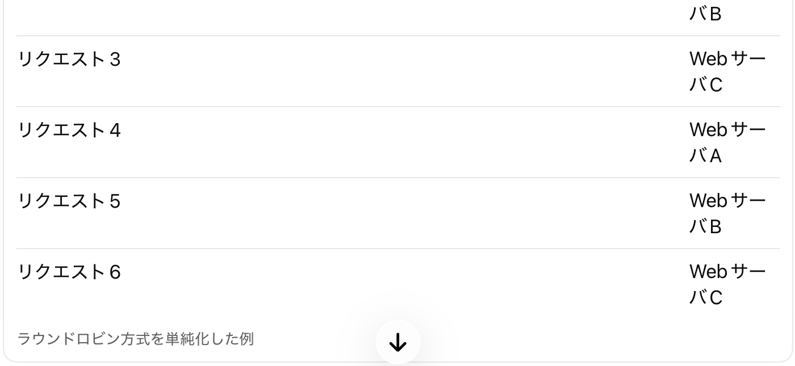
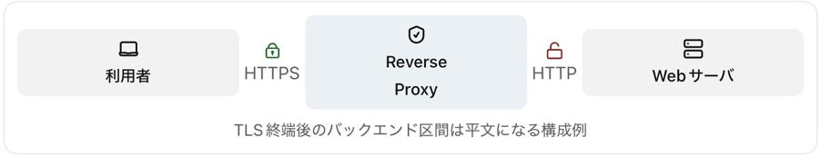

1. 到達目標と参考書【A・B・C】
第25講「メールプロトコル」に続き、企業ネットワークやWebシステムで使われるプロキシ（Proxy）とリバースプロキシ（Reverse Proxy）を学びます。どちらも通信を代理で中継しますが、設置目的と誰を代理するのかが異なります。通信ログ、アクセス制御、TLS終端、負荷分散に関する科目Bの判断力を養います。
- Forward ProxyとReverse Proxyの役割を区別する。
- クライアントからWebサーバまでの通信経路を説明する。
- CONNECT、TLSトンネル、TLS終端の違いを理解する。
- アクセス制御、キャッシュ、ログ、負荷分散を説明する。
- 設定やログから科目Bの原因と対策を記述する。
参考書：『徹底攻略 情報処理安全確保支援士教科書 令和7年度版』第3章3-3-1「Webのプロトコル」内のプロキシ・リバースプロキシ・SSL/TLS関連 pp.212〜215、関連箇所：第4章4-2のリバースプロキシ型SSO p.295。基本構造、キャッシュ、負荷分散、TLS通信方式は参考書を踏まえます。HTTPログ、ヘッダー、攻撃事例は講師補足です。
| 優先度 | 学習範囲 | 配分 |
|---|---|---|
| A：必須 | 役割の違い、通信経路、CONNECT、TLS終端、アクセス制御、ログ、対策 | 75% |
| B：理解補助 | DNS、キャッシュ、負荷分散、HTTPヘッダー | 20% |
| C：発展 | 製品固有の設定、高度な負荷分散アルゴリズム | 5% |
2. そもそもProxyとは何か【A】
Proxyは英語で「代理」を意味します。例えば社内PCが外部のWebサイトへアクセスする場合、通常はPCがWebサーバと直接通信します。プロキシを設置するとPCはプロキシへ要求を送り、プロキシが代わりにWebサーバへアクセスします。
プロキシがない場合：社内PC ←→ Webサーバ（直接通信）
プロキシがある場合：社内PC → Proxy → Webサーバ
↑
通信の代理・制御プロキシは単に通信を通過させる装置ではありません。一般的なHTTPプロキシは、クライアントから要求を受け取り、必要に応じて内容を判断し、別の通信としてWebサーバへ要求を送ります。つまり、クライアントに対してはサーバ、Webサーバに対してはクライアントとして振る舞います。これが「代理」の意味です。


3. Forward ProxyとReverse Proxyの違い【A】
Forward Proxyはクライアント側の代理です。企業が社員のインターネット利用を監視・制御したい場合に使います。Reverse ProxyはWebサーバ側の代理です。自社Webサービスへの要求を受け、内部のWebサーバへ振り分ける場合に使います。


Forward Proxy
社内PC A ─┐
社内PC B ─┼→ Forward Proxy → 外部Webサイト
社内PC C ─┘
Reverse Proxy
外部利用者 → Reverse Proxy ─┬→ WebサーバA
├→ WebサーバB
└→ WebサーバC| 比較 | Forward Proxy | Reverse Proxy |
|---|---|---|
| 主に代理する側 | クライアント | サーバ |
| 主な設置場所 | 利用者側ネットワーク | Webサービス提供側 |
| 主な目的 | 外部アクセス制御、ログ、キャッシュ | 負荷分散、TLS終端、公開窓口 |
| 利用者が接続する相手 | プロキシを明示設定する場合がある | 通常のWebサイトとしてアクセス |
| バックエンドの構成 | 多数の外部サイト | 特定の内部サーバ群 |
科目Aでどちらを選ぶか聞かれたら、誰の代理をするのかを最初に考えてください。
4. Forward Proxyの通信の流れ【A】
社内PCが http://www.example.net/news にアクセスする例です。ブラウザが設定済みプロキシへ接続し、プロキシは要求URLを確認してポリシーを適用します。許可されれば、必要に応じてDNSで宛先IPアドレスを調べ、Webサーバへアクセスします。受け取った応答をブラウザへ返します。
- ブラウザがプロキシへ接続。
- プロキシが要求URLを確認。
- アクセス制御ポリシーを適用。
- 許可時は必要に応じてDNSで宛先を調査。
- プロキシがWebサーバへアクセス。
- Webサーバの応答をブラウザへ返却。
明示的HTTP/1.1プロキシに送る典型的な要求：
GET http://www.example.net/news HTTP/1.1
Host: www.example.net直接Webサーバへ送る典型的な要求：
GET /news HTTP/1.1
Host: www.example.net前者の要求行には完全なURLが記載され、プロキシが接続先を判断できます。これはHTTP/1.1の明示的プロキシの例であり、すべての構成でこの形式になるわけではありません。
禁止サイトへの要求は、プロキシが外部へ転送する前に拒否できます。
社内PC → GET http://blocked.example.net/
→ Forward Proxy（URL・ドメインを検査）
→ ポリシー違反 → 403 Forbiddenただし403は通常のWebサーバからも返るため、403だけでプロキシの拒否とは断定できません。応答元やログを確認します。
5. Forward Proxyのアクセス制御【A】
企業では、許可された業務サイトだけアクセスを認める、危険なドメインを禁止する、利用者認証に応じて許可先を変える、アクセスログを収集するといった制御ができます。
しかしプロキシを導入しただけでは、すべての通信が制御されるとは限りません。社員PCからインターネットへ直接通信できるなら、プロキシのアクセス制御を迂回される可能性があります。
対策は、ファイアウォールなどで直接通信を制限し、許可されたプロキシ経由の通信に限定することです。科目Bでは、プロキシが存在するのに何が抜け穴なのかを説明します。
6. キャッシュと情報漏えい【A・B】
キャッシュは一度取得したコンテンツを一時保存し、後続の要求に再利用する仕組みです。例えば100人の社員が同じ公開画像を見る場合、キャッシュを利用できれば外部通信量を減らせることがあります。
ただし、ログイン後の個人情報や機密データを不適切に共有キャッシュすると、別の利用者へ情報が漏えいする危険があります。HTTPのCache-Controlなどを適切に設定します。
Cache-Control: no-storeこれはキャッシュにレスポンスを保存させないための指定です。すべてのレスポンスがキャッシュ可能とは限りません。
7. アクセスログの集中管理【A】
プロキシを経由させると、外部アクセスの記録を一元的に収集できます。
2026-10-16 09:10:21
user=tanaka
client_ip=192.168.10.25
method=GET
url=http://www.example.net/news
status=200
action=ALLOWこの例では、田中さんが使用する端末から、どのURLにアクセスし、許可されたかを調べられます。ただし利用者名を記録するには認証や利用者情報との対応付けが必要です。IPアドレスだけで常に個人を一意に特定できるわけではありません。
8. HTTPSとForward Proxy：CONNECT【A】
HTTPSではHTTPの内容がTLSで暗号化されます。プロキシを経由してHTTPSサイトへ接続する典型的な方法の一つがCONNECTメソッドです。
ブラウザ ── CONNECT ──→ Proxy ── TCP接続 ──→ Webサーバ
ブラウザ ═══════════ TLSトンネル ═══════════ Webサーバ
（Proxyは暗号化データを中継）- ブラウザがプロキシへ接続する。
- CONNECTで接続先ホストとポートを指定する。
- プロキシが許可して対象サーバとのTCP接続を確立する。
- ブラウザとWebサーバの間でTLSハンドシェイクを行う。
- プロキシが暗号化されたHTTPSデータを中継する。
CONNECT www.example.net:443 HTTP/1.1
Host: www.example.net:443
HTTP/1.1 200 Connection Established単にCONNECTでTLSトンネルを中継するだけなら、プロキシは暗号化されたHTTP本文を通常は読めません。一方、接続先ホスト名・ポート番号など、トンネルを確立するための情報は把握できます。
client=192.168.10.25
method=CONNECT
target=www.example.net:443
action=ALLOWこのログから接続先は分かりますが、HTTPS内の詳細なパスやフォームの内容まで読み取れるとは限りません。どこでTLSが終端されるかを確認してからログの意味を判断します。

9. TLSインスペクション【A】
企業ではHTTPS通信内のマルウェアや機密情報の持ち出しを検査したい場合があります。CONNECTトンネルを中継するだけでは暗号化されたHTTP本文を検査できないため、TLSインスペクション（HTTPS復号検査）を利用する構成があります。
社内PC
│ TLS接続①
▼
検査プロキシ ── TLSを終端・HTTP内容を検査・必要なら遮断
│ TLS接続②
▼
外部WebサーバTLS接続が2つに分かれます。検査プロキシはクライアント側のTLSを終端し、復号した内容を検査して、外部Webサーバとの別のTLS接続で転送します。通常、社内端末が信頼する組織管理の認証局を使い、プロキシが接続先サイトに対応した証明書を提示する構成が必要です。
注意点は、プロキシ自体の保護、外部サーバの証明書検証、復号した内容やログへのアクセス制限、機密性の高い通信についての適切な検査方針です。HTTPSだから中継機器は絶対に内容を読めない、という理解は誤りです。
10. Reverse Proxyの通信の流れ【A】
通販サイトshop.example.jpを運営し、アクセス増加に対応するためWebサーバを3台用意した例を考えます。

インターネット利用者
│ https://shop.example.jp/
▼
Reverse Proxy
├──── WebサーバA
├──── WebサーバB
└──── WebサーバC利用者は通常A・B・Cの存在を意識せず、shop.example.jpにアクセスします。リバースプロキシが要求を受け取り、適切なWebサーバへ転送します。公開窓口を集約でき、アクセス制御・TLS終端・負荷分散をまとめて実施できます。
ただし導入だけで内部サーバが安全になるわけではありません。外部からバックエンドへ直接接続できれば、リバースプロキシの制御を迂回される可能性があります。バックエンドへの接続を許可された機器からに限定します。
11. Reverse Proxyの負荷分散【A・B】
負荷分散は多数の要求を複数サーバへ振り分ける仕組みです。例えばラウンドロビン方式では、リクエスト1をA、2をB、3をC、4をA、5をB、6をCへ順番に割り当てます。
| 要求 | 振り分け先 |
|---|---|
| 1 | WebサーバA |
| 2 | WebサーバB |
| 3 | WebサーバC |
| 4 | WebサーバA |
| 5 | WebサーバB |
| 6 | WebサーバC |
実際には負荷、接続数、サーバの正常性を考慮する方式もあります。ヘルスチェックでBの障害を検知したらBを振り分け先から除外する構成もあります。
Reverse Proxy
├── WebサーバA：正常 → 転送
├── WebサーバB：異常 → 除外
└── WebサーバC：正常 → 転送ただしTCP接続の成功だけを見るヘルスチェックでは、ログイン機能などアプリケーションの異常を検知できないことがあります。何をもって正常とするかが重要です。
12. 負荷分散とセッション維持【A・B】
最初のリクエストがWebサーバA、次のリクエストがWebサーバBに振り分けられる場合を考えます。もしログイン状態がAのメモリにしか保存されていなければ、Bはログイン状態を認識できない可能性があります。
- スティッキーセッション：同じ利用者を同じバックエンドへ振り分ける。
- 共有セッションストア：複数のサーバで同じセッション情報を参照する。
どちらを採用するかは設計次第です。負荷分散は要求の振り分けであり、アプリケーションのセッション整合性を自動的に保証しません。
13. Reverse ProxyとTLS終端【A】
リバースプロキシがTLSを終端し、その後バックエンドとはHTTPで通信する構成があります。
利用者 ── HTTPS ──→ Reverse Proxy ── HTTP ──→ Webサーバ
TLSで保護 平文区間この場合、利用者からリバースプロキシまではTLSで保護されますが、バックエンド区間は暗号化されません。盗聴可能なネットワークを通る場合、ログイン情報や個人情報が漏えいするおそれがあります。
対策として、リバースプロキシとWebサーバの間にも別のTLS接続を確立できます。
利用者 ── HTTPS ──→ Reverse Proxy ── HTTPS ──→ WebサーババックエンドもHTTPSにするだけで安全性が確定するわけではなく、接続先証明書の検証や鍵管理も必要です。HTTPSが保護するのは、そのTLS接続が存在する区間です。

14. X-Forwarded-Forと送信元IPアドレス【A】
リバースプロキシを経由すると、バックエンドのWebサーバから見た接続元IPは通常リバースプロキシのIPになります。
利用者 203.0.113.10
│
▼
Reverse Proxy 192.0.2.20
│
▼
Webサーバ（接続元IP＝192.0.2.20）元のクライアントIP情報を伝えるために、X-Forwarded-Forヘッダーが使われることがあります。
GET /login HTTP/1.1
Host: shop.example.jp
X-Forwarded-For: 203.0.113.10しかしX-Forwarded-ForはHTTPヘッダーなのでクライアントが任意の値を付けて送ることもできます。
X-Forwarded-For: 192.168.1.100アプリケーションがこの値を無条件に信用し「社内IPなので管理者画面を許可」と判定すれば不正アクセスにつながります。バックエンドへの直接接続を制限し、信頼できるリバースプロキシからの送信元情報だけを採用します。プロキシではクライアントが付けたヘッダーを適切に処理し、多段構成ではどのプロキシを信頼するかを定義する必要があります。
15. Reverse Proxyのセキュリティ上の注意点【A】
リバースプロキシはWebサービスの入口として多様な防御機能を担えますが、導入だけですべての脆弱性が解消されるわけではありません。
| 脅威・問題 | 主な対策 |
|---|---|
| バックエンドへの直接アクセス | ファイアウォール等で接続元を制限 |
| TLS終端後の平文通信 | バックエンド区間もTLSで保護 |
| 偽造された送信元IPヘッダー | 信頼済みプロキシのみから取得 |
| 不適切なキャッシュによる漏えい | キャッシュ対象と制御ヘッダーを適切に設定 |
| 大量リクエストによる過負荷 | レート制限、負荷分散、容量設計 |
| Webアプリケーションの脆弱性 | アプリケーション修正、必要に応じWAF等 |
リバースプロキシとWAFは同じものではありません。リバースプロキシは通信の代理・中継を担い、WAFはWebアプリケーションへの攻撃の検知・遮断を目的とします。WAFがリバースプロキシとして動作する構成もありますが、すべてのリバースプロキシにWAF機能があるわけではありません。
16. 科目B事例1：プロキシのアクセス制限を回避【A】
ある企業ではForward Proxyで社員のWebアクセスを制御していましたが、社員PCからインターネットへの直接HTTPS通信も許可されていました。
問題点：プロキシを経由しない通信が可能で、プロキシで設定したアクセス制御やログ収集を回避できます。
対策：ファイアウォールで社内PCから外部への直接通信を制限し、許可されたプロキシ経由に限定します。
科目Bで単に「プロキシを導入する」と答えてはいけません。既に導入済みであり、問題は迂回経路が存在することです。
17. 科目B事例2：TLS終端後の盗聴【A】
利用者とリバースプロキシの間はHTTPSですが、リバースプロキシとWebサーバの間はHTTPでした。
問題点：TLS終端後の通信が平文になり、バックエンド区間で盗聴されるおそれがあります。
対策：リバースプロキシとWebサーバの間もTLSで暗号化し、接続先証明書を適切に検証します。
「HTTPSなのになぜ盗聴されるのか」への答えは、HTTPSで保護されるのがそのTLS接続の存在する区間だけだからです。
18. 科目B事例3：IPアドレスによる管理画面制限の突破【A】
WebアプリケーションがX-Forwarded-Forの値を無条件に信用し、社内IPなら管理画面を許可していました。
問題点：攻撃者がヘッダーを偽装して社内IPからのアクセスであるように見せかけられます。
対策：バックエンドへの接続元を信頼済みリバースプロキシに限定し、プロキシが適切に処理した送信元IP情報だけを採用します。
根拠は「HTTPヘッダーはクライアントが偽装できる」という性質です。
19. 科目B事例4：HTTPS通信の本文を検査できない【A】
企業のForward ProxyはCONNECTメソッドで外部サイトへの接続を許可していますが、HTTPSの本文を検査できません。
原因：プロキシはTLSトンネルを中継するだけで、TLSを終端していません。
対策：通信内容の検査が必要なら、適切な証明書管理と運用方針のもとでTLSインスペクションを実施します。
CONNECTを一律禁止するだけでは業務に必要なHTTPS通信も使えなくなる可能性があるため、短絡的な対策は不適切です。
原講義からの補足復元（第26講）
ただし、HTTPの403はプロキシ以外のWebサーバからも返されます。403が出たという事実だけで、プロキシによる拒否と断定してはいけません。応答元やログを確認する必要があります。
ただし、プロキシの導入だけで全通信が制御されるわけではありません。社員PCがプロキシを経由せず、インターネットへ直接通信できるなら、アクセス制御を迂回できる可能性があります。そのため、ファイアウォールなどで直接通信を制限し、許可されたプロキシ経由の通信に限定することが重要です。
ただし、ヘルスチェックが単にTCP接続の成功だけを見ている場合、アプリケーションの異常を検知できないことがあります。例えば、Webサーバの443番ポートは開いていても、ログイン機能がエラーを返している場合です。このため、何をもって正常と判定するのかが重要です。
ここで「CONNECTを禁止すればよい」と短絡的に答えるのは不適切です。業務に必要なHTTPS通信まで使えなくなる可能性があるためです。
20. 科目Aの重要論点と発展学習【A・B・C】
| 用語 | 試験で押さえる内容 |
|---|---|
| Forward Proxy | クライアント側の代理。外部アクセス制御・ログ・キャッシュ |
| Reverse Proxy | サーバ側の代理。負荷分散・TLS終端・公開窓口 |
| CONNECT | 主にHTTPSでTCPトンネルを確立するHTTPメソッド |
| TLSトンネル | プロキシがTLSを終端せず暗号化データを中継 |
| TLS終端 | TLSを復号する地点。以降が平文か再暗号化かを確認 |
| TLSインスペクション | TLSを終端して通信内容を検査 |
| キャッシュ | 応答の再利用。機密情報の誤保存に注意 |
| 負荷分散 | 複数サーバへの要求振り分け |
| ヘルスチェック | 振り分け先の正常性確認 |
| X-Forwarded-For | 元のクライアントIP情報を伝える。偽装に注意 |
| WAF | Webアプリケーションへの攻撃を検知・遮断 |
C：発展学習（任意）：NginxやSquidなどの製品固有設定、負荷分散アルゴリズムの詳細、HTTP/2・HTTP/3のプロキシ処理差、複雑な多段プロキシは今回の必須暗記範囲から外します。重要なのは通信がどこを通り、どこで検査・暗号化・復号され、どの設定が攻撃を可能にするか説明できることです。